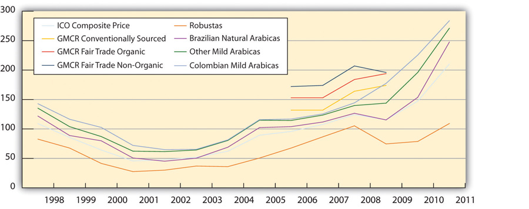

Getting coffee to the supermarket or the local coffee shop involves many different supply channels and business decisions with significant economic, environmental, and social implications. Green Mountain Coffee Roasters, Inc. (GMCR) has informed coffee drinkers about the environmental and social impacts of their consumption and helped to change coffee consumption and industry practices.
Bob Stiller, Green Mountain’s founder and chairman, is a strong advocate that Green Mountain and all businesses can help make the world a better place by committing to sustainability values and practices. Acting with concern for sustainability in a highly competitive industry that had historically focused primarily on low cost has provided opportunities for GMCR. Green Mountain management has used achieving sustainability in its products and practices to their competitive advantageA superiority gained by an organization when it can provide the same value as its competitors but at a lower price or can charge higher prices by providing greater value through differentiation. Competitive advantage results from matching core competencies to the opportunities.. As the company founder declares, “Our success continues to be rooted in our inclusive business model of creating an exceptional beverage experience for customers and consumers, in a socially and environmentally responsible way, leading to sustainable financial success.”Green Mountain Coffee Roasters, Inc., Annual Report 2009, accessed April 16, 2010, http://www.gmcr.com/Investors/AnnualReport.aspx.
GMCR founder Bob Stiller.
Green Mountain Coffee Roasters, http://blog.greenmountaincoffee.com/blog/laura/save-the-chimps-drink-great-coffee.
The focus of this case is on how Green Mountain Coffee established a strong competitive position in the specialty coffee industry by using sustainable business practices. The company helped to transform the value propositionMix of goods and services and price and payment terms offered by a firm to its customers. in the coffee industry from low cost to shared value creation, meeting consumer consumption desires while addressing social and environmental impacts of the industry.
In 2010, GMCR was recognized as the largest purchaser of Fair Trade Certified coffee in the world, a reflection of the company’s commitment to high-quality coffee as well as social and environmental sustainability in coffee-farming communities globally. In its 2009 corporate social responsibility report, “Brewing a Better World,” the company noted, “All companies have sustainability challenges, a tension between where they are today and where they want to be with respect to sustainability issues—we’re no different in that respect. What we believe makes us different is how we address that challenge—by embracing it, by running towards it, and using that tension to drive us toward new solutions.”Green Mountain Coffee Roasters, Inc., Brewing a Better World: VOICES, accessed May 30, 2010, http://www.gmcr.com/PDF/gmcr_csr_2008.pdf.
Take a friend for a cup of coffee at Starbucks, Dunkin’ Donuts, and one local coffee shop selling Green Mountain Coffee.
Go to YouTube and find videos on coffee growing around the world.
Go to Green Mountain’s homepage at http://www.gmcr.com/ and download the 2009 corporate social responsibility report, “Brewing a Better World.”
Chairman Stiller and Larry Blandford, president and CEOThe top executive responsible for a firm’s overall operations and performance. He or she is the leader of the firm, serves as the main link between the board of directors (the board) and the firm’s various parts or levels, and is held solely responsible for the firm’s success or failure. One of the major duties of a CEO is to maintain and implement corporate policy, as established by the board., in the letter accompanying the company’s corporate social report, “Brewing a Better World: VOICES,” declared their commitment to a sustainable business approach by
The challenge for Green Mountain Coffee Roasters (GMCR) management was trying to incorporate sustainable business practice in a market that traditionally did not take account of external costs, such as environmental and social impacts, and was focused on low costs to consumers. Green Mountain was able to develop a core competenceCapabilities that are a source of competitive advantage and that cannot be easily imitated. They are what give a firm competitive advantage in creating and delivering value to its customers. in its ability to apply its sustainable business modelHow a company makes money by means of sustainable business practices. across the supply chain, and the company has been able to use its sustainable business practices to differentiate itself in the highly competitive coffee industry in ways that have been difficult for rivals to copy.
Green Mountain’s success is best reflected in the rise of its stock price. From 2007 to 2010, GMCR’s stock rose by more than 2,700 percent, while the S&P 500 declined by 8 percent. From Green Mountain’s initial IPO in September 1993, its stock had increased by 15,400 percent, significantly better than the S&P 500’s 165 percent gain.Green Mountain Coffee Roasters, Inc., Annual Report 2009, accessed April 16, 2010, http://www.gmcr.com/Investors/AnnualReport.aspx.
Bob Stiller Profile
Sometimes entrepreneurs really do become billionaires overnight. That’s what happened to Robert Stiller, the founder of Green Mountain Coffee Roasters (NASDAQ: GMCR). The value of his 12% holding in Green Mountain perked up 42% last Thursday and is now worth just over $1 billion. The jump came just after his Vermont coffee company announced a strategic relationship with Starbucks (NASDAQ: SBUX). Green Mountain, also the owner of Keurig Single-Cup brewing system, will now make, market and sell Starbucks and Tazo tea K-Cups.
I profiled Stiller as Entrepreneur of the Year nearly a decade ago in a 2001 Forbes cover story. At the time, his stake in the company was worth $89 million. I tried to reach him again this week, to no avail, but I recall his story well.
Stiller, who is probably now 67, was a born entrepreneur. His first big hit was selling rolling paper on the drug-sodden campus of Columbia University in the early 1970s. His brand, E-Z Wider, had double the width of competing brands. The paper wouldn’t feed into the machine properly, causing tearing. Stiller figured out a way to prevent ripping and eventually made a small fortune. “People expected to see potheads, but we were more efficient at paper conversion than any manufacturer at the time,” he told me back then. He and a partner sold out in 1980, each pocketing $3.1 million.
After cashing out, Stiller found himself at his ski condo in Sugarbush, Vermont, looking for his next opportunity. Enjoying a rare cup of good coffee at a restaurant one night, he started roasting his own beans, using a hot-air popcorn popper at one point, a cookie sheet at another, brewing batches of coffee for friends. Stiller ended up buying the store that had sold him that memorable cup of coffee in 1981 and after some twists and turns built it into Green Mountain.
One of his smartest bets was investing in, and eventually, buying the Keurig single-cup system, created by three entrepreneurs. That business is now driving much of Green Mountain’s growth these days. Fiscal 2010 sales were up 73% to $1.36 billion, with majority of revenues coming from Keurig.
Stiller stepped down as chief executive in 2007 but is still chairman. In addition to his holding in his coffee business, he apparently has a stake in Krispy Kreme Doughnuts and owns a small private air charter, Heritage Flight, according to a story in a Vermontbiz.
Source: Luisa Knoll, “Java Man Is Newest Billionaire,” Forbes, March 16, 2011, http://www.forbes.com/sites/luisakroll/2011/03/16/java-man-is-newest-billionaire.
Along with continued outstanding growth in sales, profits, and earnings per share, Green Mountain has received numerous industry, social, and humanitarian awards. The company reported that 2011 “was another step on our path to creating a more sustainable future. Along the way, we were pleased to be recognized for our efforts to create both profit and positive change.” (See the following sidebar.)Green Mountain Coffee Roasters, Inc., Brewing a Better World: VOICES, accessed May 30, 2010, http://www.gmcr.com/PDF/gmcr_csr_2008.pdf.
To view Green Mountain Coffee Roasters Information from its Annual Report, 2011, visit http://files.shareholder.com/downloads/GMCR/1903981470x0x540307/c799e76f-7e06-418d-9bb2-b105a85ee3ea/GMCR_AnnualReport_2011.pdf
GMCR keeps track of its social and sustainability efforts in three areas: the amount of fair trade coffee (organic and nonorganic) purchased as a percentage of total coffee purchased (with a goal of at least 30 percent of all coffee purchased to be Fair Trade Certified coffee); the price it pays to farmers for premium coffee over the prevailing market price; and the dollars contributed in grants to aid its numerous supply chain partners, especially to its farmers and community partners (with a goal of at least 5 percent of profits going to aid supply chain partners and other community partners). Fair Trade USA, the leading third-party certifier of fair trade products, named GMCR the largest purchaser of Fair Trade Certified coffee in the world for 2010. GMCR purchased more than twenty-six million pounds of Fair Trade Certified coffee in 2010.
With its purchase of Fair Trade Certified (FTC) coffee, GMCR was able to identify early on and exploit market opportunities in the United States for the growing consumer interest in Fair Trade Certified organic and nonorganic coffee. With FTC coffee purchases, GMCR was able to help address the well-being of farmers in coffee exporting countries. The company did this by providing farmers and their workers a fair (also known as “living”) wage and grants to help them with medical, educational, and other economic and social needs. With the purchase of Fair Trade Certified organic coffeeCoffee that is grown under standards and guidelines that attempt to reduce the environmental impact (devastation) that is occurring in coffee-producing countries., GMCR also attempted to reduce the environmental devastation that occurred in coffee producing countries brought on by mass clearing and mass production of coffee crops. Management used these innovative supply chain practices and associated social investments as a source of a competitive advantage in the highly competitive specialty coffee industry.
GMCR senior managers believed that once consumers understood the company’s sustainability goals and practices—protecting scarce resources, strengthening communities, reducing poverty, and ensuring equity in commercial relationships—they would be more likely to purchase the company’s products and thereby “partner” with the company to help build a better world.Green Mountain Coffee Roasters, Inc., Brewing a Better World: VOICES, accessed May 30, 2010, http://www.gmcr.com/PDF/gmcr_csr_2008.pdf.
Management believed that its fair trade approach also created a “win-win” situation for the company and supply chain partners. By improving the quality of life for farmers, their families, and workers, Green Mountain sought to foster trust and closer working relationships in its supply chain. And management viewed this as investments that could help GMCR more effectively monitor quality and lower costs by assisting and negotiating directly with farm cooperatives. By lowering dependency on other supply chain intermediatesFirm or person (such as a broker or consultant) who acts as a mediator on a link between parties to a business deal, investment decision, negotiation, and so on. In the coffee supply chain, a trader, for example, acts as intermediary between farmers seeking a fair price for their coffee and roasters looking to buy coffee at a fair price. Intermediaries usually specialize in specific areas and serve as conduits for market and other types of information. Also sometimes called a “middleman.” in procuring its coffee, the company could lower supply chain logistical and procurements costs, improve turnaround time, and respond more quickly to customer preferences.
By 2009, Green Mountain was one of the largest purveyors of fair trade coffee in the United States. Fair Trade Certified coffee represented about 30 percent of Green Mountain’s overall coffee pounds sold in 2009, which was a 36 percent increase over 2008.
In 2008, GMCR began sharing and measuring vendorAlso known as a supplier. A firm that provides raw materials or services to another firm. A vendor can be a manufacturer, producer, or seller. compliance to a set of guidelines. These guidelines outlined what Green Mountain expected from its vendors regarding environmental, health, and safety standards. These standards included vendor legal compliance, labor conditions, and environmental responsibility. For measuring compliance, GMCR created a set of tools, including self-assessments, surveys, on-site assessments by GMCR staff, and commissioned audits of vendor facilities. Management tested these tools by auditing its Waterbury, Vermont, facility.Green Mountain Coffee Roasters, Inc., Brewing a Better World: VOICES, accessed May 30, 2010, http://www.gmcr.com/PDF/gmcr_csr_2008.pdf.
GMCR’s goal for its coffee supply chain was ambitious: to help the people in coffee-growing communities lead healthier and more prosperous lives. To facilitate the accomplishment of this goal, GMCR’s used two outreach initiatives. First, the company provided on-the-ground assistance by helping suppliers improve their ability to deliver high-quality specialty coffee to the marketplace. Areas of assistance included advice on cultivation techniques, training on cupping skills, and connecting suppliers with industry resources to help farmers strengthen and grow their business. Second, GMCR provided financial grants to nonprofits that both provided technical skills and helped communities achieve a more sustainable future.John M. Talbot, Grounds for Agreement: The Political Economy of the Coffee Commodity Chain (London: Rowman & Littlefield, 2004), 44.
Coffee has been consumed for centuries ever since the coffee bean was first cultivated and used by Arabs as a beverage in the fifteenth century.“Ethiopia: Coffee History, Production, Economy Facts,” Tree Crops, accessed May 30, 2010, http://www.gmcr.com/PDF/gmcr_csr_2008.pdf. First discovered and cultivated in Ethiopia, the Arabica bean found its way to coffee houses in the Middle East and spread throughout Europe in the sixteenth century. Aided by Western colonialism, religious missionaries, and explorers to other tropical and subtropical regions of the world, the Arabica bean and the less valuable Robusta bean eventually became global crops. Coffee trees only grow in tropical and subtropical climates, primarily in Africa, Latin America, and Asia. One coffee tree produces one pound of green coffee per year. There are two types of coffee: specialty and conventional (basic). Specialty coffee is made from the Arabica bean and basic from the Robusta bean. Often times these beans are blended together in the roasting process to lower costs or offer greater variety.
The International Coffee Organization (ICO) estimated that approximately 1.4 billion cups of coffee were poured each day worldwide in 2008.Robert S. Lazich, ed., Market Share Reporter: An Annual Complication of Reported Market Share, Data on Companies, Products, and Services (Farmington Hills, MI: Gale, 2009), 1:191–92. The United States is the single largest consumer of coffee worldwide and is the largest importer of green (before roasting) coffee, approximately 2.5 million bags per month. In 2009 Germany was the second largest importer of coffee, followed by Italy, Japan, and France. Combined, the European Union countries imported approximately 5.4 million bags a month in 2009. The largest green coffee producing countries (2007–8) were Brazil, Vietnam, Colombia, Indonesia, and Ethiopia. (See Figure 9.1 "Coffee Global Supply Chain".)
More than 50 percent of Americans older than eighteen years of age drink coffee every day. This represents more than 150 million daily drinkers. Thirty million American adults drink specialty coffee beverages daily, which include mocha, latte, espresso, café mocha, cappuccino, and frozen or iced coffee beverages. The United States imports in excess of $4 billion worth of coffee per year. Americans consume four hundred million cups of coffee per day, making the United States the leading consumer of coffee in the world. (See the following sidebar.)
Did You Know?
Source: “Coffee Statistics Report—2012 Edition,” Top 100 Espresso, http://www.top100espresso.com.
Roasters compete primarily on price, brand, and differentiation. The price of green coffee is based on basic supply and demand economic factors. Supply is dependent on several factors including weather, pest damage, politics, and economics in the coffee-producing countries. Demand for coffee depends on several factors, including consumer preferences; changes in consumer lifestyles; national, regional, and local economic conditions; demographic trends; and health benefits or risks.
An industry supply chainA supply chain is a system of organizations, people, technology, activities, information, and resources involved in moving a product or service from supplier to customer. Supply chain activities transform natural resources and raw materials and components into a finished product that is delivered to the end customer. In sophisticated supply chain systems, used products may reenter the supply chain at any point where residual value is recyclable. Supply chains link value chains. describes the processes (steps) by which a product is produced and ends up with (final) consumers. The green (unroasted) coffee bean travels through many steps in the supply chain (also known as the value chain) from harvest to final customer. A summary of some of the key players found in the value chain is presented in Figure 9.1 "Coffee Global Supply Chain". Coffee roasters or manufacturers are the key or focal player in the coffee supply chain.
Figure 9.1 Coffee Global Supply Chain

Source: Image courtesy of the authors.
The largest US domestic coffee brandsA name, term, sign, symbol, design, or a combination of them intended to identify the goods and services of one seller and to differentiate the seller from those of other sellers. Branding is about getting potential consumers to view a seller as the only one that provides a solution to their problem. A brand is an image in the consumer’s mind and one that must be constantly fulfilled to remain positive. in 2007 were Folgers, Maxwell House, and Starbucks followed by several regional brands. Market segmentationTargeting audiences into homogenous groups according to demographics, psychographics, or behavioral or geographical characteristics. is based on brands, price, cost, quality, and other variables that are based on customer (a) behavioral, (b) demographic, (c) psychographic, and (d) geographical differences. These brands either carry the coffee roaster’s corporate name, such as Starbucks (an international brand) and Peet’s (a regional brand), or are multimillion-dollar divisions of large multinationalEnterprise operating in several countries but managed from one (home) country. Generally any firm or group that derives a quarter of its revenue from operations outside of its home country is considered a multinational company and may fall into one of the four categories: (1) multinational, decentralized firm with strong home country presence; (2) global, centralized firm that acquires cost advantage through centralized production wherever cheaper resources are available; (3) international firm that builds on the parent firm’s technology or research and development; or (4) transnational firm that combines the previous three approaches. According to UN data, some thirty-five thousand firms have direct investment in foreign countries, and the largest hundred of them control about 40 percent of world trade. companies, such as Procter & Gamble, Kraft Foods (Gevalia), J. M. Smucker (Folgers, Millstone, Brothers), or Nestlé (Nespresso). Procter & Gamble and Kraft Foods dominated the coffee market with 40 percent and 30 percent market share, respectively, in 2007.Robert S. Lazich, ed., Market Share Reporter: An Annual Complication of Reported Market Share, Data on Companies, Products, and Services (Farmington Hills, MI: Gale, 2009), 1:191. Starbucks was one of the largest coffee roasters with more than eight thousand stores, or 32 percent market share in the retail store category in 2007.Robert S. Lazich, ed., Market Share Reporter: An Annual Complication of Reported Market Share, Data on Companies, Products, and Services (Farmington Hills, MI: Gale, 2009), 2:677.
The Specialty Coffee Retailer Association estimated that at least two-thirds of the US adult population drinks coffee at least once a week. The association estimated that there were 25,000 coffee shops in 2010, up from 9,470 shops in 2002. The coffee shops generated $14 billion in sales or approximately one-third of the $40 billion US coffee industry.“Top Ten Trends: Overview,” Specialty Coffee Retailer Association, accessed April 16, 2010, http://www.specialtycoffee.com/ME2/Audiences/dirmod.asp?sid=&nm=&type=Blog&mod=View+Topic&mid. In addition to larger roasters, such as Starbucks, Green Mountain, and Dunkin’ Donuts, small roasters included (the number in parentheses indicate the number of stores) Caribou Coffee (322), Tim Horton’s (292), Coffee Bean and Tea Leaf (213), Coffee Beanery (200), Peet’s Coffee (166), Seattle’s Best (160), and Tully’s (100). Dunkin’ Donuts was by far the largest worldwide coffee and baked goods chain with more than three million customers per day in 2008. At the end of 2008, Dunkin’ Donuts was close to Starbucks in number of retail stores with 8,835 stores worldwide, including 6,395 franchised restaurants in thirty-four US states and 2,240 international shops in thirty-one countries.“About Us,” Dunkin’ Donuts, accessed April 30, 2010, http://www.dunkindonuts.com/content/dunkindonuts/en/company.html.
The specialty coffee retailers competed with larger food processing companies in the supermarket segment of the industry. This category included Procter & Gamble, Nestlé, J. M. Smucker Company, Sara Lee, General Foods, and Philip Morris. Specialty coffee sales increased by 20 percent per year from 2007 to 2011 and, by 2011, accounted for nearly 8 percent of the $18 billion US coffee industry. The ICO in 2011 reported that the simplification of methods for brewing roasted coffee at home along with rising coffee prices was encouraging at home coffee consumption. Even with the growth of coffee shops, the home continued to be the preferred brewing and consumption location in all countries. The ICO reported that one of the reasons could be the development of coffee pods and capsule machines, which made it easier for consumers to make good coffee at home.John M. Talbot, Grounds for Agreement: The Political Economy of the Coffee Commodity Chain (London: Rowman & Littlefield, 2004), 33.
The Fair Trade Certified (FTC) coffee market was established in 1988 when world coffee prices declined sharply. In 1997, the Fairtrade Labelling Organizations International (FLO) was formed as an umbrella organization to expand the scope and monitor fair trade with universal standards and labels.Kathleen E. McKone-Sweet, “Lessons from a Coffee Supply Chain,” Supply Chain Management Review (2009), accessed May 6, 2010, http://www.accessmylibrary.com/coms2/summary_0286-14185976_ITM.

Source: Flickr, http://www.flickr.com/photos/counterculturecoffee/5385748622/.
The Fair Trade Certified organic coffee movement attempted to reduce the environmental devastation that occurred in coffee producing countries. Fair trade was meant to counteract the practice pursued by large multinational corporations that used mass production methods for coffee farming. These methods conflicted with traditional, more environmentally friendly methods of coffee farming. The mass production techniques included clearing of large tracks of forested farmland, machine harvesting, mechanized warehouse operations, and heavy use of chemicals and pesticides to increase crop yield. Mass production farming caused severe environmental degradation and forced many small farms to close causing economic hardships in many coffee producing areas.John M. Talbot, Grounds for Agreement: The Political Economy of the Coffee Commodity Chain (London: Rowman & Littlefield, 2004), 197–203. In addition, the heavy use of fertilizers and pesticides resulted in significant nitrate runoff into ground water and streams. Farmers and workers and others were exposed to highly toxic chemicals, including some banned in the United States. Concern about the adverse impacts of the change in coffee farming played an important role in the emerging Fair Trade Certified coffee market.Carl Obermiller, Chauncey Burke, Erin Talbott, and Gwereth P. Green, “Taste Great or More Fulfilling: The Effect of Brand Reputation on Consumer Social Responsibility Advertising for Fair Trade Coffee,” Corporate Reputation Review 12, no. 2 (2009): 160–61.
From 1998 to 2009, 629 million pounds of fair trade products came into the United States. This included 448 million pounds of coffee or 71 percent of all fair trade products imported. Fair trade coffee imports grew 25 percent over 2008. This growth was driven primarily by increased demand for fair trade coffee in large retail outlets and restaurants, such as Whole Foods Market, Walmart, McDonald’s, and Starbucks. In 2008, North American “sustainable” coffee sales were a record $1.3 billion, a 13 percent increase over 2007.John M. Talbot, Grounds for Agreement: The Political Economy of the Coffee Commodity Chain (London: Rowman & Littlefield, 2004).
Bob Stiller opened his first coffee shop in 1981 in Waterbury, Vermont, selling high-quality coffee. His concept was simple; sell only high-quality coffee to ordinary people every day. When demand for his coffee outstripped his small store, he started bagging his coffee and sold it to wholesalers, supermarkets, and by mail order. A strong following for his coffee soon developed in New England and in the Northeast. Stiller’s entrepreneurial drive and passion for selling quality coffee eventually became the cornerstone of the company’s purpose and guiding principles, “to create the ultimate coffee experience in every life we touch from tree to cup—transforming the way the world understands business.”John M. Talbot, Grounds for Agreement: The Political Economy of the Coffee Commodity Chain (London: Rowman & Littlefield, 2004). Stiller focused his company’s purpose around supply chain management (SCM)Management of material and information flow in a supply chain to provide the highest degree of customer satisfaction at the lowest possible cost. SCM requires commitment of supply chain partners to work closely to coordinate order generation, order taking, and order fulfillment, creating an “extended enterprise” spreading far beyond the producer’s location..
In 2005, Green Mountain was the first company in the coffee industry to support the United Nation’s Global Reporting Initiative (GRI) mission to develop globally accepted sustainability reporting guidelines. Green Mountain Coffee Roasters’ (GMCR) management adopted the GRI’s guidelines because the company’s senior managers believed that their organization could benefit from sustainability measurement and comparison and GRI’s guidelines served this purpose.
The following year, GMCR published its first corporate social responsibility report. Stiller noted at the time that the report would give employees a better way to understand corporate values and the way the company conducted business. It would also challenge them to do better.TransFair USA, TransFair USA: Almanac 2009, accessed June 8, 2010, http://www.fairtradeusa.org/resource-library/downloads. The report made public for the first time the company’s triple bottom line (TBL)Financial, social, and environmental effects of a firm’s policies and actions that determine its viability as a sustainable organization. goals and progress in meeting them. In 2008, a “social and environmental responsibility” committee was added for the board of directors. The committee is responsible for overseeing the company’s social and environmental responsibilities. In addition, the company established the positions of vice president for corporate social responsibility and vice president for environmental affairs reporting directly to the CEO. And a corporate social responsibility team was established consisting of six individuals focused specifically on supply chain outreach, domestic community outreach, social compliance, environmental management systems, and communication.Kathleen E. McKone-Sweet, “Lessons from a Coffee Supply Chain,” Supply Chain Management Review (2009), accessed May 6, 2010, http://www.accessmylibrary.com/coms2/summary_0286-14185976_ITM.
Green Mountain’s corporate social responsibility programs are organized into six practice areas that span the company’s supply chain and are communicated under the banner of “brewing a better world.” The six practice areas are partnering with supply chain communities, supporting local communities, protecting the environment, building demand for sustainable products, working together for change, and creating a great place to work. The company’s overall corporate governance structure is available at http://www.gmcr.com/investors. In GMCR’s 2011 annual report, Stiller stated, “We are particularly proud that our earnings growth has enabled us to increase the resources we direct to societal and environmental initiatives under our banner of ‘Brewing a Better World.’ In fiscal year 2011, the total resources we allocated to sustainability programs totaled $15.2 million. A key corporate value proposition of GMCR is ongoing support and partnership with the communities in which we operate through volunteerism, philanthropy, and other socially and environmentally responsible initiatives.”“Home Page,” Green Mountain Coffee Roasters, Inc., accessed April 10, 2010, http://www.gmcr.com/Investors/Company-Profile.aspx.
Green Mountain successfully shifted some of the coffee industry away from a focus on price (cost to consumers) to shared value creation providing benefits to the company and consumers in an environmentally and socially sustainable way by stimulating greater demand for Fair Trade Certified coffee. In “Brewing a Better World,” management maintained that “as the economic rewards of Fair Trade Certified™ coffee grew, more smallholder farmers would work towards Fair Trade status. And more people would be lifted out of poverty and hunger. More hectares of land under cultivation would be cultivated with care. And so on in a reinforcing circle. It could work the same in many businesses and industries—maybe all.”Green Mountain Coffee Roasters, Inc., Brewing a Better World: VOICES, accessed May 30, 2010, http://www.gmcr.com/PDF/gmcr_csr_2008.pdf.
In fiscal year 2011, GMCR delivered 95 percent revenue growth with net sales of $2,650,900,000. Approximately 84 percent of those net sales were attributable to the combination of Keurig brewing systems and related accessories and single K-Cup packs. The company sold 5.9 million Keurig brewers in fiscal year 2011. Net sales from K-Cup packs totaled $1,704,000,000 in 2011, up 104 percent, or $869,600,000 from 2010.CSRwire, “Green Mountain Coffee Releases First Corporate Social Responsibility Report,” news release, October 3, 2006, http://www.csrwire.com/press/press_release/13663-Green-Mountain-Coffee-Roasters-Releases-First-Corporate-Social-Responsibility -Report.
Green Mountain’s product concept was fashioned after Gillette’s high-margin razor / razor blade strategyThe word strategy comes from the Greek noun “strategos”—“the art of the general”—and the Greek verb “stratego”—“to plan the destruction of one’s enemies through the effective use of resources.” According to Michael Porter, strategy is not a matter of being better at what you do, it’s a matter of being different at what you do. Strategy identifies those major activities that link a firm’s internal environment to its external environment with the primary goal to achieve organizational purpose by creating value for customers.. Green Mountain sold its retail Keurig brewers at cost or licensed the technology to other roasters to enable high volume sales of its K-Cups. The goal was to place as many brewers as possible into homes, offices, hotels, and supermarkets to boost its Fair Trade Certified (FTC) model through brewer and K-Cup sales growth. Keurig brewers were sold at Bed Bath & Beyond, Macy’s, Target, Kohl’s, Walmart, Sears, and other well-known retailers, giving the company’s fair trade business model greater exposure to a wider base of customers. By 2011, Keurig was the best-selling single-serve coffee maker brand in the United States with just over 71 percent market share.
Source: Flickr, http://www.flickr.com/photos/piratejohnny/4883366419/
Starbucks has been GMCR’s largest rival in the specialty coffee market segment. In an attempt to stall declining retail store sales in the United States, Starbuck’s launched a national campaign for its Pike’s Place Roast coffee at a $1.50 per cup. Blandford saw Green Mountain’s home brewing technology as a very affordable customer alternative to its competitors’ retail store coffee. In contrast to Starbucks’s $3 per cup for a tall latte, at-home K-Cup brewing costs consumers about 50 to 60 cents a cup.Green Mountain Coffee Roasters, Inc., Brewing a Better World: VOICES, accessed May 30, 2010, http://www.gmcr.com/PDF/gmcr_csr_2008.pdf. Green Mountain saw its K-Cup products as a way for consumers to cut cost. Money magazine estimated that it would cost consumers $1,246 annually for a daily latte at Starbucks (Figure 9.2 "Annual Single-Cup Coffee Cost at Selected Roasters (Prices in Cents)").
In 2002, GMCR started selling Newman’s Own Organics coffee in K-Cups. This collaboration gave GMCR access to Costco, BJ’s, and Sam’s Club. Just as important, the collaboration with Newman’s Own Organics allowed GMCR to make Fair Trade Certified organic coffee available to all consumers. After the collaboration was started in 2002, Green Mountain became a leader in the organic coffee category and Newman’s Own Organics became one of the fastest-growing national coffee brands in the United States.
In 2007, GMCR entered into a licensing agreement to sell Caribou Coffee that gave it access to midwestern markets. In 2009, Green Mountain acquired the brand and wholesale business of Tully’s Coffee, a respected specialty coffee roaster with roots in the Pacific Northwest. In 2009, Green Mountain acquired the Timothy’s World Coffee brand and its wholesale coffee business located in Toronto, Canada. This acquisition included Timothy’s World Coffee, Emeril’s, and Kahlúa Original brands. Timothy’s gave Green Mountain entry into international markets for the first time. Timothy’s sold only high-quality Arabica coffee, which was sourced globally. Through its new product development and marketing programs, Green Mountain sought to nationally expand its supermarket and college and university food service accounts. At year-end 2009, Green Mountain had more than 8,500 supermarket and 240 college and university accounts.
GMCR’s Tanzanian Gombe Reserve coffee was the first coffee to receive Jane Goodall’s “Good for All” seal, signifying that GMCR not only promotes better pay for farmers but is committed to protect the environment and the planet’s wildlife. The coffee grown near the boundaries of Tanzania’s Gombe National Park is one of the few places worldwide where coffee farmers and chimpanzees live side-by-side. GMCR’s outreach program provides farmers with an incentive to preserve the forest and a chance at economic stability while giving Green Mountain access to one of the best climates for growing high-quality Arabica coffee.Green Mountain Coffee Roasters, Inc., Brewing a Better World: VOICES, accessed May 30, 2010, http://www.gmcr.com/PDF/gmcr_csr_2008.pdf.
Figure 9.2 Annual Single-Cup Coffee Cost at Selected Roasters (Prices in Cents)
Sources: Green Mountain Coffee Roasters, Inc., Corporate Social Responsibility Report: Brewing a Better World, accessed May 30, 2012, http://www.gmcr.com/csr.aspx; ICO,"Indicator Prices Annual And Monthly Averages: 1998 To 2010," accessed June 6, 2010, http://dev.ico.org/prices/p2.htm.
Competition in the specialty segment of the coffee industry intensified as companies attempted to gain market share in this profitable and rapidly growing segment through acquisitionsAcquiring control of a corporation, called a target, by stock purchase or exchange, either hostile or friendly; also called takeover. and by other means. This was particularly true in the single-serve coffee segment of the market. Several companies were taking greater interest in this segment and moved to acquire other companies or introduce their own brewer and K-Cup technologies. In October 2008, Green Mountain settled a lawsuit against Kraft Foods Global for patent infringement that violated its intellectual property rights, with Green Mountain asserting that Kraft infringed on Keurig’s brewing and K-Cup technologies. Kraft paid Green Mountain $17 million to settle the suit. As part of the settlement Green Mountain licensed its brewer and cartridge technologies to Kraft.Elizabeth Fuhrman, “Green Mountain Coffee Roasters Gives a One-Two Punch,” Beverage Industry, March 2009, 32.
In September 2012, two patents on Green Mountain Coffee Roasters’ (GMCR) K-Cups and Keurig brewer expire. These key patents are related to technology that maintained a precise amount of coffee in each pod and the means to extract its liquid. Copying the technology will not be difficult as the patents protect relatively simple inventions.
In anticipation of the patent expirations, GMCR launched new products (see more in the discussion that follows) and also aggressively pursued licensing of its K-Cup technology. Notable licensing agreements were made with Caribou, Folgers, Dunkin’ Donuts, and Starbucks. However, Green Mountain Coffee Roasters’ stock price plunged 16 percent after Starbucks said it would soon start selling the single-cup coffee machines. Market investors believed that this move by GMCR’s main competitor would deflate demand for Green Mountain’s Keurig machines. Shares of Starbucks on the same day rose by 3 percent.
In the company’s 2008 corporate social responsibility report, GMCR management stated that their top challenge was the environmental impact of their coffee packaging materials and brewing systems. To address this challenge management engaged in an in-depth life cycle assessmentComprehensive ecological assessment that identifies the energy, material, and waste use of a product or service, and its impact on the environment. It is sometimes called a “cradle to grave” evaluation because it begins with the design of the product and progresses through the extraction and use of its raw materials, manufacturing, or processing with associated waste stream, storage, distribution, use, and disposal or recycling. to understand and compare single-cup brewing versus drip brewing from a systems standpoint. Mike Dupee, Green Mountain’s vice president of corporate social responsibility, in his letter in the 2008 Corporate Social Report, wrote,
Growth, as with any change in the status quo, generally triggers some amount of self-examination. How did we get here? Where are we going and how are we going to get there? As a values-based business, we ask these same questions—and our commitment to social and environmental responsibility adds another layer to the process. How do we address the management of our ecological footprint while growing at these rates? How do we manifest our commitments across a growing family of brands? How do we maintain the best aspects of our corporate cultureCulture determines what is acceptable or unacceptable, as well as attitudes and behavior in a corporation. and welcome new ideas as we spread out across new geographies and welcome more and more people into our enterprise? It is more apparent than ever that we must continue to prioritize key sustainability opportunities and challenges alongside the demands of a fast-growing business.Green Mountain Coffee Roasters, Inc., Annual Report on Form 10-K for Fiscal Year Ended September 26, 2009.
In the 2009 CSR report, management reported on the results of their life cycle analysis. The life cycle assessment showed that the disposal of a K-Cup’s packaging represented a relatively small fraction of the total environmental impact of GMCR products—the most significant environmental impacts occurred in the cultivation of coffee beans, the use of brewing systems, and the material used in the products’ packaging. One area of concern with the single-serve coffee was the manufacturing requirements of the K-Cup pack, which made recycling difficult. The K-Cup pack was made up of three main elements: the cup itself, a filter, and an aluminum foil top. The pack’s components were deemed as required to prevent oxygen, light, and moisture from degrading the coffee. To offset the environmental impact of the K-Cup brewing system, GMCR introduced a new line of more environmentally friendly brewers under the Vue brand name. The plastic used in Vue pack cups can be recycled wherever polypropylene / number five plastic is accepted. The Vue brewing system was viewed as another step on GMCR’s long journey to reduce the environmental impact of their products.Green Mountain Coffee Roasters, Inc., Annual Report on Form 10-K for Fiscal Year Ended September 26, 2009.
Can Disposable Single-Cup Coffee Be Sustainable?
Green Mountain Coffee made the popular Keurig Single-Cup brewing system in which a bit of coffee is sealed in plastic and can be popped cleanly into a single-serve coffee maker. Does it make sense to put fair-trade coffee in a disposable petroleum-based package?
Of the coffee shipped around the world by Green Mountain Coffee (GMC), 27 percent is currently fair trade certified and that number is increasing. They have partnered with Newman’s Own Organics to widen the market for fair trade coffees and by putting fair trade coffees in their popular K-Cups they say they are popularizing fair trade and helping coffee growing communities. In some of their other products 19 percent of the bags are made from PLA (the corn-based bioplastic) and last year they cut their solid waste 19 percent by composting the organic waste from their production processes. Part of their fleet runs on biodiesel. GMC offsets 100 percent of their direct greenhouse gas emissions. They partner with nonprofits such as Heifer International and provide grants focused on poverty reduction.
K-Cups however, are petroleum based plastic, with a layer of polyethylene coating an interior filter paper and an aluminum foil top. It keeps the coffee fresh, but makes recycling impossible. Small though the cups may be they are big business, with GMC reporting that 2.5 million K-Cups® are brewed every day. K-Cups® were about ½ of their net sales last year.
On the sustainability of their operation GMC states, “we understand that the impact of the K-Cup® waste stream is one of our most significant environmental challenges.” They have commissioned a lifecycle analysis to compare drip brew to K-Cups®, but if they already know it is a significant challenge, in a product line representing half of their sales, it is notable that no other information on alternatives or reasonable goals are available except a statement that they “are working to identify the right definition of environmentally friendly.”
People have the choice to buy the reusable filter model (although it got bad reviews for durability), but assuming that their convenience-loving customers like the no fuss product, but also care about issues like fair trade, why is such a connected company not moving faster on this high impact issue?
Source: Lillian Laurence, “Can Disposable Single-Cup Coffee Be Sustainable?,” Sustainable Life Media, accessed June 25, 2010, http://www.sustainablebrands.com/news_and_views/articles/can-disposable-single-cup-coffee-be-sustainable-green-mountain-coffee.
Green Mountain management has taken many other steps in design, packaging, and energy use to reduce the environmental impact of the Keurig brewing systems, including the following:
In October 2011, David Einhorn and his hedge fund, Greenlight Capital, publically criticized Green Mountain Coffee Roasters, attacking the company’s patents and arrangement with Starbucks.David Benoit, “Here’s the Einhorn Presentation That Killed Green Mountain Shares,” Deal Journal (blog), October 19, 2011, http://blogs.wsj.com/deals/2011/10/19/heres-the-einhorn-presentation-that-killed-green-mountain-shares. Green Mountain’s stock promptly fell 10 percent.
Einhorn’s concerns included the following:
The following points were made in favor of GMCR:
Source: Helix Investment Management, “Who’s Right about Green Mountain Coffee Roasters? Einhorn or the Street?,” October 19, 2011, accessed March 3, 2012, http://seekingalpha.com/article/300640-who-s-right-about-green-mountain-coffee-roasters-einhorn-or-the-street.
On May 2, 2012, GMCR shares declined 48 percent after the company reported it had sold fewer brewers and K-cups than it had anticipated in the quarter ending in March, causing the company to lower its profit expectations for the year. The fallout came as Green Mountain faces increased competition in the fall when Starbucks plans to launch a high-end espresso brewer and two of Green Mountain's patents on K-cup technology expire.